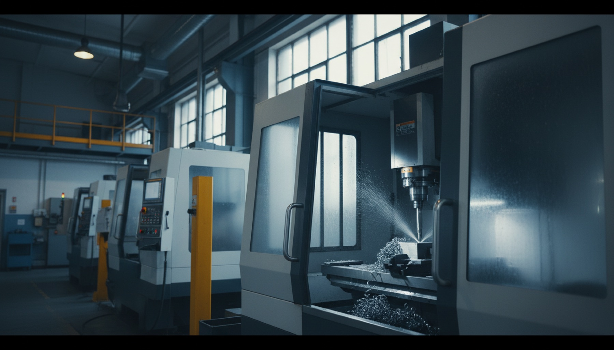
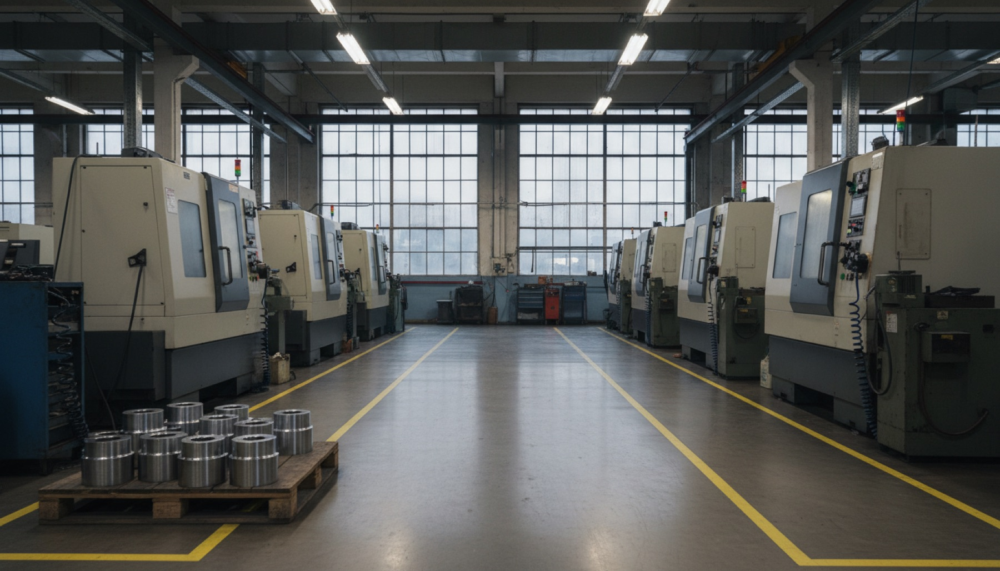
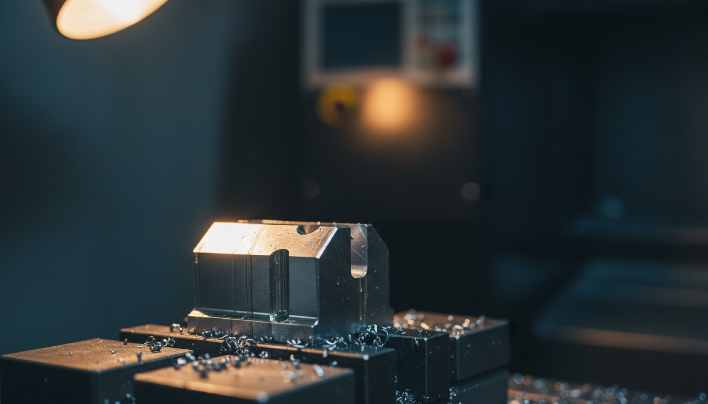
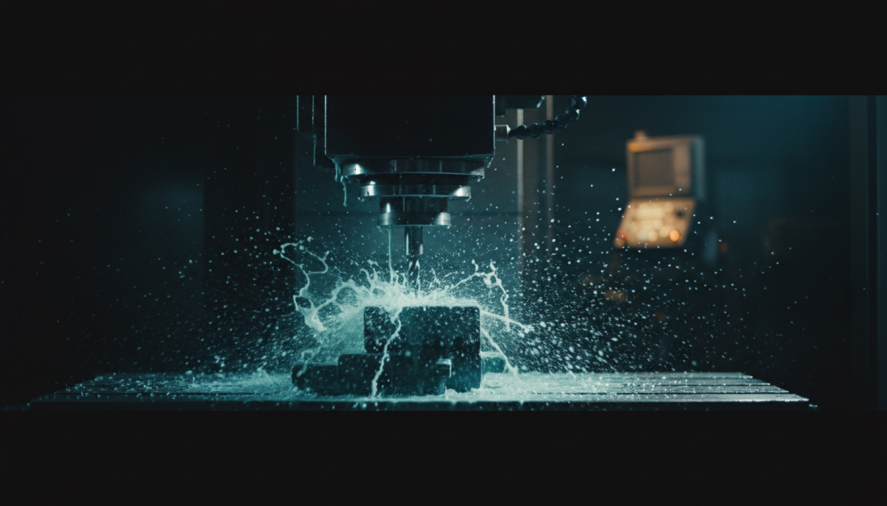

Reparto di punta
Fresatura 5 assi
Geometrie complesse in continuo, da prototipo a serie. Programmazione CAM dedicata e campione di prima articolo su ogni commessa.

Subfornitura meccanica di precisione · dal 1982
Lavoriamo componenti critici per automotive, aerospaziale e medicale. Tornitura e fresatura CNC a 5 assi, rettifica, collaudo metrologico certificato su ogni lotto.
ISO 9001:2015 IATF 16949 UNI EN 9100
Chi siamo
Lavoriamo dove un errore non torna indietro.
Tre generazioni alla stessa officina di Brescia. Dal grezzo al pezzo collaudato senza passaggi esterni: il controllo del processo resta tutto in casa, e ogni lotto esce con il suo certificato dimensionale.

Anni di attività, dal 1982
Pezzi prodotti all'anno
Tolleranza in produzione
Consegne nella data concordata
Cosa facciamo
Reparto di punta
Geometrie complesse in continuo, da prototipo a serie. Programmazione CAM dedicata e campione di prima articolo su ogni commessa.
Torni plurimandrino fino a Ø 320 mm.
Finiture Ra 0.2 e accoppiamenti critici.
CMM in sala climatizzata, rapporto su ogni lotto.
Dalla colata al collaudo, ogni pezzo risalibile.
L'officina, in movimento
Cicli automatizzati, controllo statistico di processo, secondo e terzo turno in automatico su isole robotizzate.
Perché Officine Lario

Caso · Racing
Un costruttore del motorsport ci ha affidato l'intera famiglia di alberi. Tolleranza ±2 µm su 12.000 pezzi all'anno.
scarti in 18 mesi
lead time vs multi-fornitore
on-time delivery
Da quando lavoriamo con Officine Lario i fermi linea per non conformità sono spariti. E consegnano il giorno che dicono.
Responsabile Acquisti
Gruppo automotive, Tier 1
Qualità & certificazioni
Il sistema qualità è verificato da enti terzi accreditati. I rapporti di collaudo accompagnano la merce e restano archiviati per dieci anni.

Ricevete un'offerta tecnica entro 48 ore lavorative, con fattibilità e tempi.